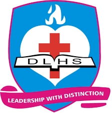

Resume
Experience
Download Resume2020 - 2022
Web Developer & Cyber Operations Analyst
SOUTECH VENTURES
Abuja, Nigeria
Developing and hosting various SOUTECH websites using HTML, CSS, JavaScript, WordPress, and Bootstrap V5, gaining hands-on experience. Skilled in cybersecurity, with expertise in protecting against breaches and attacks. Proficient in networking tools and techniques such as Cisco Packet Tracer, Wireshark, VirtualBox, CyberOps Workstation, and SysInternal tools.
2022 - Present
IT Specialist
NCAN (NATIONAL CASHEW ASSOCIATION OF NIGERIA)
Abuja, Nigeria
Overseeing and managing multiple company websites, ensuring smooth operations and security. Handling all IT services, including setting up network access points for a secure environment. Providing round-the-clock technical support, team training, and clear documentation. Responsible for hosting, maintaining domain names, and managing email services.
Education
2019 - 2023

Landmark University
Omu-Aran, Kwara State
Undergraduate
Computer Science
At Landmark University, I built a strong foundation in computer science, specializing in web development and cybersecurity. I worked on innovative projects, developed problem-solving skills, and cultivated a passion for continuous learning and excellence.
2016 - 2018
Word Of Faith Group Of Schools
Durumi, Abuja
Secondary School
Science
I developed a solid academic foundation, excelling in STEM subjects and nurturing my passion for technology. I participated in science fairs, coding clubs, and leadership activities, which enhanced my analytical, teamwork, and communication skills. These experiences laid the groundwork for my journey into computer science and web development.
2014 - 2016

Deeper Life High School
Kado, Abuja
Secondary
Science
At Deeper Life High School, I built a strong academic foundation, developed leadership skills, and honed teamwork, communication, and problem-solving abilities, all while embracing moral values that shaped my character for future challenges in the tech industry.
2005 - 2014
Madonna Nursey & Primary School
Garki 2, Abuja
Primary school
Science
At Madonna Nursery and Primary School, I developed a strong foundation in literacy, numeracy, and critical thinking, which sparked my passion for technology and set the stage for my academic and professional journey.
Professional Skills
Social Media Management
Videography
Web Development & Design
Network Security
CybeOperations
IT Secrutiy Consultant
Languages
HTML
CSS
JavaScript
Python
React.js
Node.js